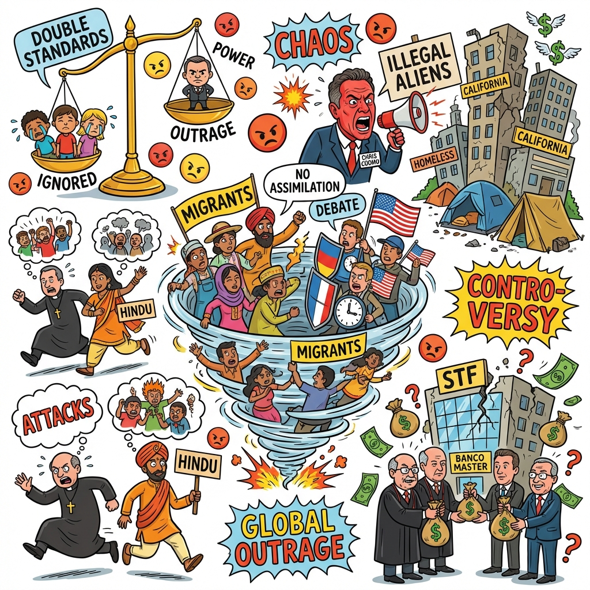

The Daily Globe: Double Standards in Israel-Palestine Conflict Outrage, Chris Cuomo Meltdown Over 'Illegal Aliens' Terminology, and Banco Master Scandal Involving STF Justice Toffoli
Published on 2026-01-23

World
- Double Standards in Israel-Palestine Conflict Outrage
Debates highlight perceived biases in media coverage and humanitarian responses to child casualties, with accusations of hypocrisy.
- Religious Persecution and Lack of Global Condemnation
Outrage over attacks on Christians in Nigeria and Hindus in India, contrasting with attention to other conflicts.
- Immigration and Cultural Integration Debates
Ayaan Hirsi Ali's call to deport non-assimilating migrants ignites fury on multiculturalism and Western values.
USA
- Chris Cuomo Meltdown Over 'Illegal Aliens' Terminology
CNN panel clash on immigration language sparks debates on censorship and enforcement.
- California's Failures in Homelessness and Crime
Outrage at state's dominance in negative metrics like poverty, taxes, and anti-business policies.
- Allegations of Systemic Political Frauds
Claims of left-wing frauds in elections, COVID policies, BLM, and immigration.
Brazil
- Banco Master Scandal Involving STF Justice Toffoli
Corruption allegations of offshore accounts and conflicts of interest shaking judicial integrity.
- STF Justices' Miraculous Wealth and Impunity
Debates on ethics, cover-ups, and untouchable cartel in Supreme Court.
- BBB Comment Ignites Social Policy Outrage
Nutrition debate escalates to welfare, taxes, inequality, and government aid.
Topic Index
- judicial-corruption
- immigration-debate
- media-bias
- religious-persecution
- political-fraud
- state-failure
- hypocrisy-outrage
- multiculturalism-conflict